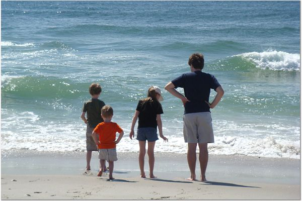

07.21.07
Posted in news, sports, tv at 8:35 pm by danvk
I don’t get the wave of excitement about David Beckham coming to America to join the L.A. Galaxy and play in the MLS soccer league. ESPN was advertising this like mad. His wife, a former spice girl, is even getting her own reality show.
First thing I don’t get: How does an MLS team have $250 million to pay this guy? Does the entire league bring in that much money?
Second thing I don’t get: Why does anyone expect this to get American’s excited about soccer? Getting the World Cup in 1996 couldn’t do it, so how could one man? But there’s no arguing with the true believers.
The whole hysteria has made me very cynical today. If you want to get people excited about something, you don’t tell them how great it is or try to explain why they should be excited. No, you just act as though the rest of the country already is excited. I’ve often wondered if ESPN could pull this off with a lesser-known sport like disc golf. If they covered professional disc golf events on SportsCenter and brought in some talking heads for a “Disc Golf Tonight” show to analyze the week’s events, people would start to care about it.
Permalink
07.19.07
Posted in music, personal at 10:15 pm by danvk

Either through misplacement or theft, I lost the dano, my iPod nano, sometime last week. It’s OK. It was only a 1 GB nano, and I won it in a drawing. I paid nothing.
In fact, I last bought an iPod in April, 2004. Here’s what it looked like:

That red glow was totally trendy. It’s pretty wild to compare the technical specs on each. The prices were identical – $300 each. What’s 3+ years done to the iPod?
| |
2004 |
2007 |
| Price |
$294.24 |
$302.02 |
| Capacity |
15 GB |
80 GB |
| Battery Life |
~5 hours |
“20 hours” (we’ll see) |
| Size |
4.1″ x 2.4″ |
4.1″ x 2.4″ |
| Thickness |
0.62″ |
0.55″ |
| Weight |
5.6 oz |
5.5 oz |
| Display |
2″, 160×128 |
2.5″, 320×240 |
So all the specs have improved, and the thing’s gotten smaller. Who ever said the march of technology was a bad thing? I’m mostly excited about the video capabilities. If I throw some TV episodes on there, I can jog with my iPod, commercial-free!
Permalink
07.15.07
Posted in math at 11:07 pm by danvk
Inspired by the recent Laffer curve fuss, I’ll be doing my MarkCC imitation tonight, calling out the scourge of bad math wherever it rears its ugly head.
Case number 1: I’m on something of an Alex Haley kick, so I’ve been reading The Autobiography of Malcolm X. Here’s a passage that jumped out at me:
Here is an example: a British anthropologist named Dr. Louis S. B. Leakey is displaying some fossil bones—a foot, part of a hand, some jaws, and skull fragments. On the basis of these, Dr. Leakey has said it’s time to rewrite completely the history of man’s origin.
This species of man lived 1,818,036 years before Christ. And these bones were found in Tanganyika. In the Black Continent.1
How good of Dr. Leakey to be so precise! And here I thought radio-carbon dating was only accurate to about one part in a hundred at best. What year was this written in again? 1964? Well, 1,818,036 + 1,964 = 1,820,000. Something makes me think Alex never learned about significant figures..
Case number 2: This one’s an exercise for the reader, since my tongue is tied. According to The Economist’s Technology Quarterly,
The average installed storage capacity of a Fortune 1000 company grew from 198 terabytes in early 2005 to 680 terabytes in October 2006, according to figures from Deloitte, a consultancy.2
What was different about the Fortune 1000 in early 2005 and October 2006? Why might this claim by incredibly misleading?
Permalink
07.08.07
Posted in personal at 1:01 pm by danvk

From left to right that’s my nephews James and Michael, my niece Katie, and me. Good to see that Michael’s copying my look.
Permalink
07.07.07
Posted in sports, tennis at 12:46 am by danvk
I took some grief for writing too much about the French Open, so I’ve avoided saying anything about the last two weeks at Wimbledon. I get one post though, right?
The main story has been rain. It’s been so wet that Nadal wound up needing five days to finish his third-round match against Robin Soderling. The tournament got way behind schedule, so many players have been playing on back to back to back days. Men’s quarters were today, men’s semis are tomorrow, and the finals are the next day.
That makes for some really tired players, so we’ve been getting a few surprise results. A lot of matches have been one-sided at the beginning, then a player gets tired or hurt, and the match suddenly reverses. That’s what happened to Andy Roddick today. He was up two sets and a break on Richard Gasquet, but wound up losing a 6-4, 6-4, 7-6, 7-6, 8-6 marathon. NBC must be all kinds of pissed. Instead of getting a marquee matchup with an American, Andy Roddick vs. Roger Federer, they get a lopsided matchup with a player nobody’s heard of. Remember the tight schedules? After playing a four hour slugfest than finished after 8 PM, Gasquet has to wake up tomorrow morning and play Roger Federer at noon. It’s going to be a blowout.
The women’s final is also going to be a blowout. Venus Williams has been playing out of her mind, and Marion Bartoli (who upset Justine Henin today) has never played in a Grand Slam final before. There’s a fine tradition of choking in your Grand Slam final debut on the women’s tour. See Anna Ivanovic and Justine herself for reference. Expect more of that tomorrow.
The one interesting match is the Nadal vs. Djokovic semi. These guys will both be exhausted. They’ve both played several days in a row and had a few five-setters. I’m picking Nadal in five, but I’ll be rooting for Djokovic.
Another random note: Bud Collins, the veteran NBC tennis commentator, is retiring. Good riddance. This guy is like the Dick Vitale of tennis. Nobody likes him. His role now is mostly to do cringe-inducing post-match interviews with the champions. A sampler: Bud: “On clay, Rafa is el Rey!” Nadal: “hehehe, ahhmm” (awkwardly looks for anyone else to talk to). Way to go, Bud.
Update: An update doesn’t break my one-post limit, does it? I called all three matches correctly. Venus and Fed rolled, and Nadal won. I called five sets, but it only went three. Djokovic hurt his foot and had to retire in the third set, tied at one set apiece, presumably on its way to a thrilling fifth. =) I’m picking Fed in four tomorrow. The final is on NBC at 9 AM EST/6 AM PST.
Permalink
« Previous entries
Next Page »
{kind=link}